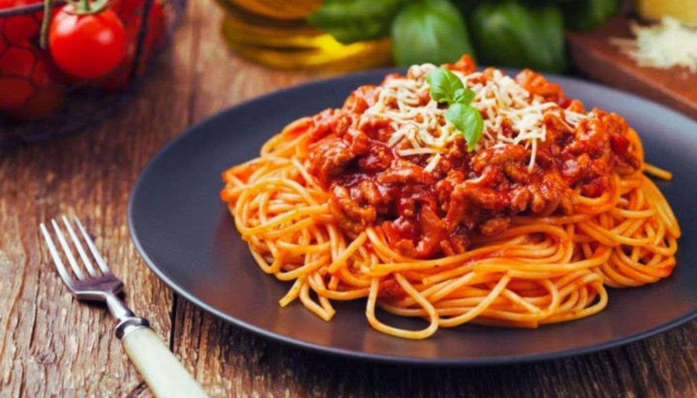
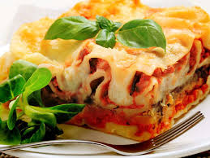
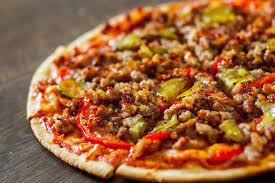
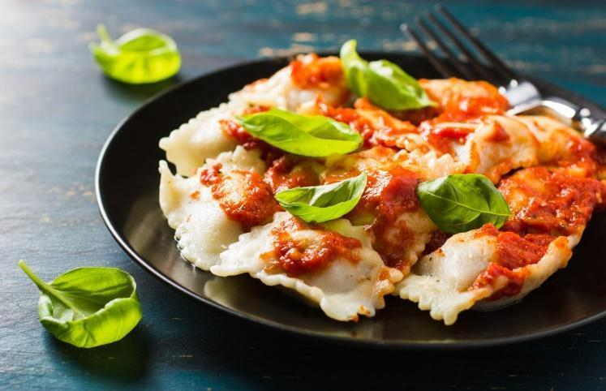
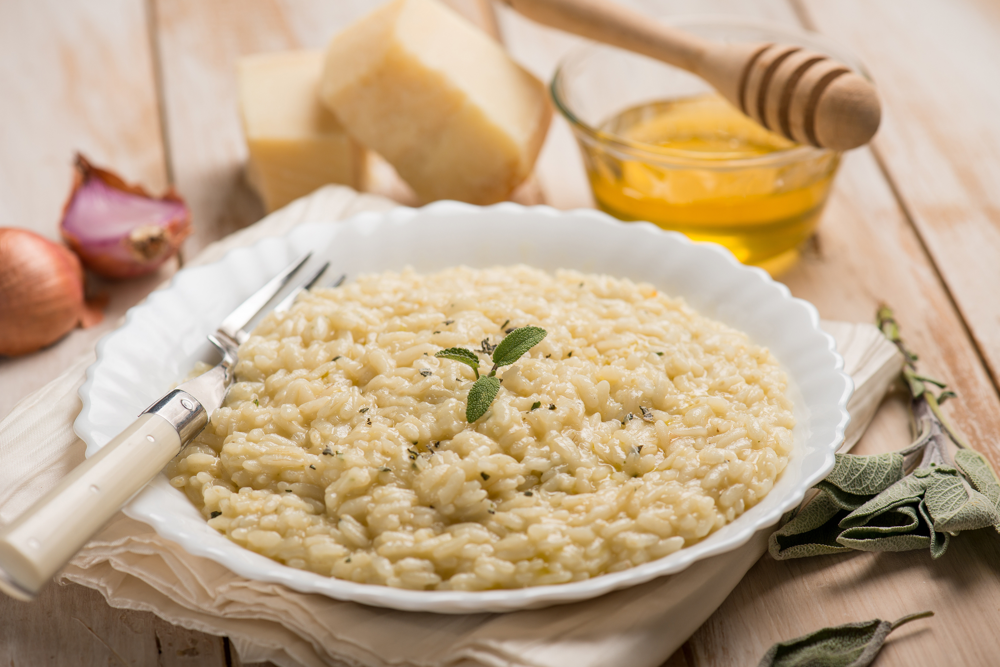

Cardapio
- Macarronada ao Molho Vermelho 
- Macarronada ao Molho Branco
- Lassanha 
- Pizza de Frango com Catupiry
- Pizza de Carne 
- Pizza Doce
- Ravioli 
- Risotto 


Aqui servimos diversas comidas típicas da Itália.
* APERITIVOSS E ENTRADA, CHAMADAS DE Antipasti